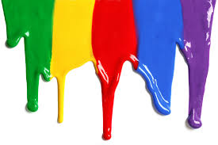
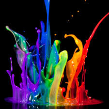
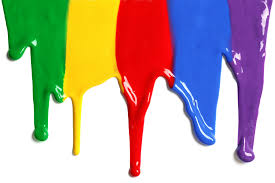
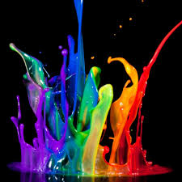

ABOUT US
The OLYMPIC Difference
Note from the Managing Director:
 |
Our company has been producing inks for over 25 years. Through our experience, determination and appetite for growth we have mastered the industry for producing the highest quality inks. Our top priority is to successfully meet the demand of our customers and we ensure to provide an excellent quality at a fair market price which will meet your products packaging ink needs. |
What We Do
We work in the Service Industry manufacturing inks and coatings that can be used to print on all types of substrates.
Objectives
- To provide quality inks at a reasonable price
- Tenacious provision of helpful customer service
- Relentless development in scientific and economic research in printing ink
- Fair trade for the company's workforce
Quality Policy
Olympic Inks Limited is committed to:
- Providing customers with first class service
- Providing customers with high quality products which surmount requirements and fit for their purposes
- Operating the business to the systems required by the Ogun State Government
- Enhancing the skills of management and staff through review and actively pursuing an on-going training policies, thus preparing staff to perform their work more effectively
- Promoting the culture of continual quality improvements and the philosophy of getting things right first time
- Rigorously controlling the delivery time of all products
- Promoting the quality management systems and ensuring implementation is achieved by internal auditing, management review, corrective and preventive action
History
Olympic Inks was founded in 1986 as a small-scale industry located in Ogun State, Nigeria. Since the start Olympic Inks has maintained a strong commitment to the printing industry. We pride ourselves on providing customers with efficient logistics and a very comprehensive technical support. Moreover we see the benefits in educating our customers, to ensure that they maximise the full potential of our products. In the early days seven tons of ink were produced per month. By 1992 the company had relocated to a bigger site. By 2007 development was further boosted by the addition of the production of Gravure inks (produced in the form of paste and or liquid). Currently production has reached new heights of 170 tons per month, providing satisfaction to 52 companies across Nigeria.
The Team Leaders
Founder and Chairman: Mr. Arjandas Hathiramani Managing Director: Mr. Shyam Hathiramani
The Mission
At Olympic Inks there is a perpetual commitment towards progress providing top quality products at an affordable price. The company attends yearly fairs around the world, discovering the latest equipment and development for production from China to Germany and many countries in between. The aim is to boost production to its full capacity of 300 tons per month, to increase the range of inks produced and to start exportation of inks to other countries.


 


